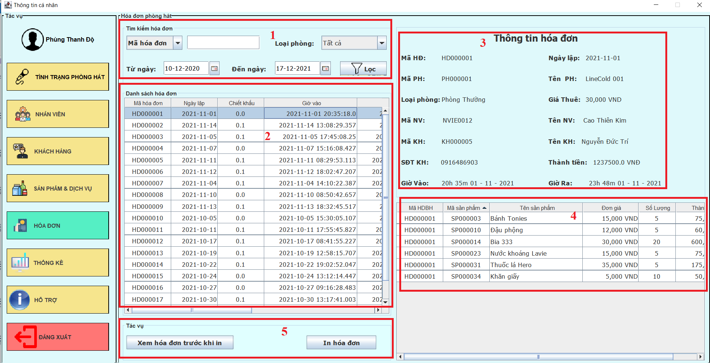
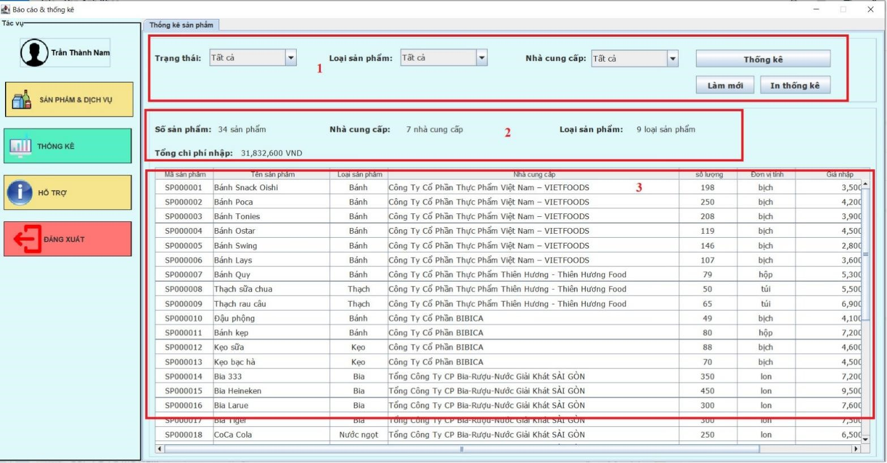

Hướng dẫn sử dụng phần mềm quản lý cửa hàng Karaoke LineCool
Mục Lục
- Giới thiệu chung
- Cấu hình phần cứng phần mềm
- Các chức năng chính
- Các chức năng của nhân viên quản lý
- Giao diện thông tin nhân viên
- Giao diện nhân viên
- Giao diện chỉnh sửa chức vụ
- Giao diện khách hàng
- Giao diện sản phẩm
- Giao diện nhà cung cấp
- Giao diện phòng hát
- Giao diện thống kê sản phẩm
- Giao diện thống kê doanh thu
- Giao diện thống kê nhân viên
- Giao diện hóa đơn
- Giao diện tình trạng phòng hát
- Giao diện thanh toán hóa đơn
- Các chức năng của nhân viên lễ tân
- Các chức năng của nhân viên Kho
1. GIỚI THIỆU ỨNG DỤNG
- Ứng dụng sẽ giúp nhân viên quản lý nắm bắt được những thông tin nhân viên đang làm việc trong cửa hàng. Và ở đó nhân viên quản lý sẽ biết thông tin chi tiết mã, họ tên, địa chỉ, ngày tháng năm sinh, số điện thoại và chỉ nhân viên quản lý cửa hàng mới có thể chỉnh sửa lại giá sản phẩm dịch vụ và xem doanh thu cửa hàng lương nhân viên, đồng thời nhân viên quản lý có thể xem sửa xóa thông tin nhân viên và sản phẩm. Có những trường hợp như sai tên, số điện thoại, địa chỉ,... thì chức năng cập nhật của ứng dụng có thể giúp cho quản lý cập nhật lại những thông tin nhân viên.
- Nhân viên quản lý kho sẽ chỉnh số lượng hàng hóa mà karaoke sẽ phục vụ miễn phí cho từng loại phòng khác nhau hoặc những bữa tiệc được thuê phòng riêng để phục vụ. Ngoài ra còn chỉnh sửa số lượng hàng sẽ được nhập vào bao nhiêu là đủ trong tháng để phù hợp với doanh thu karaoke đã bán ra trước đó. Ngoài ra nhân viên kho sẽ đảm nhận vai trò kiểm tra hàng tồn kho còn lại để báo lên quản lý và tiến hành nhập thêm hàng mới về kho phục vụ cho khách hàng, tùy vào loại hàng mà karaoke phục vụ sẽ biết được số lượng món ăn mà khách hàng yêu thích và từ đó tạo ra menu phục vụ khách hàng tốt hơn trong tháng sau.
- Khi nhân viên lễ tân bắt đầu ca làm của mình nhân viên lễ tân cần phải đăng nhập tài khoản dành cho nhân viên lễ tân để sử dụng hệ thống. Và trước khi kết thúc ca làm việc thì cần phải đăng xuất tài khoản của mình khỏi hệ thống để tránh ảnh hưởng đến ca sau.
- Khi có khách hàng đến sử dụng dịch vụ nhân viên cần phải tư vấn cho khách hàng lựa chọn phòng sau đó nhân viên kiểm tra tình trạng danh sách phòng nếu hết phòng nhân viên cần phải thông báo cho khách hàng để đổi sang dạng phòng khác nếu không khách hàng có thể rời đi. Khi nhân viên kiểm tra và thấy phòng còn thì nhân viên mới bắt đầu tạo phòng trong hệ thống, nhân viên cần yêu cầu khách hàng cung cấp giấy chứng minh, số điện thoại để lưu trữ thông tin cuối cùng nhân viên cần nhấn nút tạo phòng để bắt đầu đánh dấu thời gian sử dụng của khách. Trong quá trình sử dụng dịch vụ nếu khách cần hay đổi phòng thì phải báo cho nhân viên lễ tân để thực hiện qui trình đổi phòng. Để đổi sang phòng khác cho khách nhân viên cần phải kiểm tra lại phòng còn trống và thông báo cho khách hàng tiếp đến nhân viên cần thực hiện các thao tác trên hệ thống. Nhân viên nhấp chuột vào phòng hiện tại khách đang ở và lựa chọn theo yêu cầu khách hàng.
- Khách hàng sau khi kết thúc sử dụng dịch vụ của Karaoke nhân viên lễ tân sẽ thực hiện các bước để thanh toán cho khách hàng. Nhân viên sẽ xuất hóa đơn ở phòng khách hàng đã sử dụng và sau đó khách hàng cần xác nhận hóa đơn của mình nêú đúng hóa đơn thì bắt đầu thanh toán bằng tiền mặt, nhân viên sẽ xuất hóa đơn và cảm ơn khách hàng đã sử dụng dịch vụ.
2. CẤU HÌNH PHẦN CỨNG - PHẦN MỀM
2.1 Phần cứng
| CPU | RAM | HDD | Architecture |
|---|---|---|---|
| Intel(R) Core (TM) i7-1165G7 2.80 GHz | 8 GB | 360 GB | 64 bit |
2.2 Phần mềm
| Tên phần mềm | Phiên bản | Loại |
|---|---|---|
| Eclipse IDE for Enterprise Java and Web Developers - 2021-09 | 12.0 | IDE cho Java, JDK 16 |
| Microsoft SQL Server 2014 | 19.0.1084.56 | Hệ quản trị cơ sở dữ liệu |
| JDBC | 4.2 | Executable Jar File (.jar) |
| Microsoft Windows 10 | 20H2 | Hệ điều hành |
3. CÁC CHỨC NĂNG CHÍNH
3.1. Chức năng của nhân viên quản lý
3.1.1. Giao diện thông tin nhân viên
- Màn hình hiển thị các thông tin của nhân viên đã đăng nhập vào hệ thống quản lý karaoke LineCold.
-Các nút tác vụ để thao tác và xử lý ở hệ thống (Hình 1 - mục 2):
- Cập nhật thông tin nhân viên: Nhấn nút cập nhập thông tin để tiến hành thay đổi thông tin nhân viên. Thông tin nhân viên sau khi thay đổi sẽ được cập nhật ở giao diện nhân viên.
- Đổi mật khẩu: Sau khi nhấn nút đổi mật khẩu sẽ hiển thị giao diện và nhân viên có thể tiến hành thay đổi mật khẩu ở giao diện này bao gồm:
- Sau khi nhân viên nhập mật khẩu cũ, mật khẩu mới và xác nhận mật khẩu thì bấm lưu và hệ thống sẽ lưu lại mật khẩu mới và nhân viên sẽ tiến hành đăng nhập bằng mật khẩu vừa mới thay đổi.
3.1.2. Giao diện nhân viên
- Giao diện nhân viên sẽ hiển thị ra toàn bộ danh sách nhân viên hiện có trong karaoke LineCold và có thể giúp quản lý có thể quản lý nhân viên bao gồm:
- Lựa chọn để tìm kiếm nhân viên có trong hệ thống hay không (Hình 3 - mục 1):
- Mã nhân viên: Tìm kiếm theo mã nhân viên đã có trong hệ thống.
- Tên nhân viên: Tìm kiếm theo tên nhân viên đã có trong hệ thống.
- Số điện thoại: Tìm kiếm theo số điện thoại đã có trong hệ thống.
- Email nhân viên: Tìm kiếm theo Email đã có trong hệ thống.
- Tên chức vụ: Lựa chọn chức vụ đã tạo sẵn trong hệ thống (Nhân viên quản lý, nhân viên lễ tân, nhân viên kho, nhân viên bảo vệ).
- Hiển thị danh sách tìm kiếm sản phẩm đã chọn ở mục 1 (Hình 3 - mục 2):
- Hiển thị danh sách: hiển thị toàn bộ danh sách chi tiết nhân viên có trong hệ thống (Mã nhân viên, tên nhân viên, số điện thoại, email…).
- Ấn chọn nhân viên cụ thể ở danh sách mục 2, thông tin nhân viên sẽ hiển thị xuống bảng thông tin như sau (Hình 3 - mục 3):
- Mã nhân viên: Tạo tự động mã khi xóa rỗng và không thể chỉnh sửa hay thêm bớt mã nhân viên.
- Tên nhân viên: Nhập tên nhân viên (Không được để trống).
- Chức vụ: Lựa chọn chức vụ cho nhân viên (Không được bỏ trống).
- Ngày sinh: Nhập ngày sinh (Không được để trống).
- Chứng minh: Nhập chứng minh nhân viên (Không được để trống).
- Tiền lương: Nhập vào tiền lương nhân viên (Không được để trống, tiền lương không được nhỏ hơn 0)
- Số điện thoại: Nhập số điện thoại (Không được để trống).
- Email: Nhập email nhân viên (Không được để trống).
- Địa chỉ: Nhập địa chỉ nhân viên (Không được để trống)
- Các nút tác vụ để thao tác và xử lý ở hệ thống (Hình 3 - mục 4):
- Thêm: Thêm nhân viên vào hệ thống nếu đã nhập đầy đủ thông tin nhân viên.
- Xóa rỗng: Xóa rỗng các thông tin vừa nhập ở bảng thông tin nhân viên để trở về trạng thái rỗng ban đầu.
- Sửa: Sửa một hoặc nhiều thông tin bất kì của nhân viên mong muốn để chỉnh sửa.
- Xóa: Xóa nhân viên ra khỏi danh sách và hệ thống cửa hàng và đặt lại tên chức vụ thành “Đã nghỉ việc”.
3.1.3. Giao diện chỉnh sửa chức vụ
- Giao diện giúp quản lý có thể chỉnh sửa được các chức vụ đang có hoặc chưa có trong hệ thống.
- Lựa chọn tìm kiếm chức vụ có hay không trên danh sách chức vụ (Hình 3 – mục 1).
- Tên Chức vụ: Tìm kiếm theo tên chức vụ nhân viên.
- Mã chức vụ: Tìm kiếm theo mã chức vụ nhân vụ.
- Hiển thị danh sách chức vụ đang có trên hệ thống (Hình 3 – mục 2 ).
- Hiển thị danh sách: hiển thị toàn bộ danh sách chi tiết chức vụ có trong hệ thống (Mã chức vụ, tên chức vụ).
- Các nút tác vụ để thao tác và xử lý ở hệ thống (Hình 3 - mục 3):
- Thêm: Thêm chức vụ vào hệ thống nếu đã nhập tên chức vụ.
- Xóa rỗng Xóa rỗng các thông tin vừa nhập ở tên chức vụ để trở về trạng thái rỗng ban đầu.
- Sửa: Sửa một hoặc nhiều thông tin bất kì của chức vụ mong muốn để chỉnh sửa.
- Xóa: Xóa chức vụ ra khỏi danh sách và hệ thống.
3.1.4. Giao diện khách hàng
- Giao diện khách hàng sẽ hiển thị ra toàn bộ danh sách khách hàng đã đến karaoke LineCold và có thể giúp quản lý có thể quản lý khách hàng bao gồm:
- Lựa chọn để tìm kiếm khách hàng có trong hệ thống hay không (Hình 3 - mục 1):
- Mã khách hàng: Tìm kiếm theo mã khách hàng đã có trong hệ thống.
- Tên khách hàng: Tìm kiếm theo tên khách hàng đã có trong hệ thống.
- Số điện thoại: Tìm kiếm theo số điện thoại đã có trong hệ thống.
- Email: Tìm kiếm theo Email đã có trong hệ thống.
- Hiển thị danh sách tìm kiếm sản phẩm đã chọn ở mục 1 (Hình 3 - mục 2):
- Hiển thị danh sách: hiển thị toàn bộ danh sách chi tiết khách hàng có trong hệ thống (Mã khách hàng, tên khách hàng, số điện thoại, email…).
- -Ấn chọn khách hàng cụ thể ở danh sách mục 2, thông tin khách hàng sẽ hiển thị xuống bảng thông tin như sau (Hình 3 - mục 3):
- Mã khách hàng: tự tạo tự động mã khi xóa rỗng và không thể chỉnh sửa hay thêm bớt mã khách hàng.
- Tên khách hàng: Nhập tên khách hàng (Không được để trống).
- Ngày sinh: Nhập ngày sinh (Không được để trống).
- Số điện thoại: Nhập số điện thoại (Không được để trống).
- Email: Nhập email khách hàng (Không được để trống).
- Địa chỉ: Nhập địa chỉ nhân viên (Không được để trống).
- Các nút tác vụ để thao tác và xử lý ở hệ thống (Hình 3 - mục 4):
- Thêm: Thêm khách hàng vào hệ thống nếu đã nhập đầy đủ thông tin khách hàng.
- Xóa rỗng: Xóa rỗng các thông tin vừa nhập ở bảng thông tin khách hàng để trở về trạng thái rỗng ban đầu.
- Sửa: Sửa một hoặc nhiều thông tin bất kì của khách hàng mong muốn để chỉnh sửa.
- Xóa: Xóa khách hàng ra khỏi danh sách và hệ thống cửa hàng.
3.1.5. Giao diện sản phẩm

- Màn hình hiển thị các thông tin sản phẩm có trong cửa hàng để quản lý sản phẩm và tìm kiếm sản phẩm, hệ thống sẽ liệt kê tự động các sản phẩm như sau:
- Lựa chọn để tìm kiếm sản phẩm có trong hệ thống hay không (Hình 4 - mục 1):
- >Mã sản phẩm: Tìm kiếm theo mã sản phẩm đã có trong hệ thống.
- Tên sản phẩm: Tìm kiếm theo tên sản phẩm đã có trong hệ thống.
- Loại sản phẩm: Tìm kiếm theo loại sản phẩm đã được tạo sẵn (Bánh, kẹo, bia,…).
- Nhà cung cấp: Tìm kiếm theo nhà cung cấp đã được tạo sẵn (Công Ty Cổ Phần Thực Phẩm Việt Nam – VIETFOODS,…).
- Hiển thị danh sách tìm kiếm sản phẩm đã chọn ở mục 1 (Hình 4 - mục 2):
- Hiển thị danh sách: hiển thị toàn bộ danh sách chi tiết sản phẩm có trong hệ thống (Mã sản phẩm, tên sản phẩm, giá bán, giá nhập…).
- Ấn chọn sản phẩm cụ thể ở danh sách mục 2, thông tin sản phẩm sẽ hiển thị xuống bảng thông tin như sau (Hình 4 - mục 3):
- Mã sản phẩm: tự tạo tự động mã khi xóa rỗng và không thể chỉnh sửa hay thêm bớt mã sản phẩm.
- Tên sản phẩm: Nhập tên sản phẩm (nếu có).
- Giá bán: Nhập giá bán sản phẩm (nếu có).
- Giá nhập: Nhập giá nhập sản phẩm (nếu có).
- Đơn vị tính: Nhập đơn vị tính sản phẩm (nếu có).
- Số lượng: Nhập giá nhập sản phẩm (nếu có).
- Loại sản phẩm: Chọn loại sản phẩm đã được tạo sẵn (Bánh, kẹo, bia,…)
+ mục 1: Hiển thị danh sách loại sản phẩm.
+ mục 2: Nhập thông tin loại sản phẩm, mã sản phẩm tự động nhập mã, tên loại nhập tên (nếu có).
+ mục 3: Sau khi nhập thông tin thì có thể thêm loại sản phẩm vào hệ thống, sửa lại thông tin, xóa rỗng làm mới lại các thông tin.
- Nhà cung cấp: Chọn theo nhà cung cấp đã được tạo sẵn (Công Ty Cổ Phần Thực Phẩm Việt Nam – VIETFOODS,…).
- Các nút tác vụ để thao tác và xử lý ở hệ thống (Hình 4 - mục 4):
- Thêm: Thêm sản vào hệ thống nếu đã nhập đầy đủ thông tin sản phẩm.
- Xóa rỗng: Xóa rỗng các thông tin vừa nhập ở bảng thông tin sản phẩm để trở về trạng thái rỗng ban đầu.
- Sửa: Sửa một hoặc nhiều thông tin bất kì của sản phẩm mong muốn để chỉnh sửa.
- Xóa: Xóa sản phẩm ra khỏi danh sách và hệ thống cửa hàng.
3.1.6. Giao diện nhà cung cấp
- Màn hình hiển thị các thông tin nhà cung cấp có trong cửa hàng để quản lý các nhà cung cấp và tìm kiếm, hệ thống sẽ liệt kê tự động các nhà cung cấp hàng hóa cho cửa hàng như sau:
- Lựa chọn để tìm kiếm nhà cung cấp có trong hệ thống hay không (Hình 6 - mục 1):
- Tìm kiếm nhà cung cấp: Tìm kiếm theo lựa chọn đã được tạo sẵn(Mã nhà cung cấp, tên nhà cung cấp, số điện thoại, email).
- Làm mới: Làm mới lại thanh tìm kiếm đã nhập sẽ xóa trắng.
- Hiển thị danh sách tìm kiếm nhà cung cấp đã chọn ở mục 1 (Hình 6 - mục 2):
- Hiển thị danh sách: hiển thị toàn bộ danh sách chi tiết nhà cung cấp có trong hệ thống(Mã nhà cung cấp, tên nhà cung cấp,…).
- Ấn chọn sản phẩm cụ thể ở danh sách mục 2, thông tin sản phẩm sẽ hiển thị xuống bảng thông tin nhà cung cấp như sau (Hình 6 - mục 3):
- Mã nhà cung cấp: tự tạo tự động mã khi xóa rỗng và không thể chỉnh sửa hay thêm bớt mã nhà cung cấp.
- Điện thoại: Nhập số điện thoại (nếu có).
- Tên nhà cung cấp: Nhập tên nhà cung cấp (nếu có).
- Email: Nhập email (nếu có).
- Địa chỉ: Nhập địa chỉ (nếu có).
- Các nút tác vụ để thao tác và xử lý ở hệ thống (Hình 6 - mục 4):
- Thêm: Thêm sản vào hệ thống nếu đã nhập đầy đủ thông tin nhà cung cấp.
- Xóa rỗng: Xóa rỗng các thông tin vừa nhập ở bảng thông tin nhà cung cấp để trở về trạng thái rỗng ban đầu.
- Sửa: Sửa một hoặc nhiều thông tin bất kì của nhà cung cấp mong muốn để chỉnh sửa.
3.1.7. Giao diện phòng hát
- Màn hình hiển thị các thông tin phòng hát trong cửa hàng để quản lý các phòng hát và tìm kiếm, hệ thống sẽ liệt kê tự động các phòng hát như sau:
- Lựa chọn để tìm kiếm phòng hát có trong hệ thống hay không(Hình 7 - mục 1):
- Mã phòng hát: Tìm kiếm theo mã phòng hát đã có trong hệ thống.
- Tên phòng hát: Tìm kiếm theo tên phòng hát đã có trong hệ thống.
- Loại sản phẩm: Tìm kiếm theo loại phòng hát đã được tạo sẵn(Phòng VIP, phòng thường).
- Tìm kiếm: Tìm kiếm theo lựa chọn muốn tìm kiếm.
- Hiển thị danh sách tìm kiếm phòng hát đã chọn ở mục 1 (Hình 7 - mục 2):
- Hiển thị danh sách: hiển thị toàn bộ danh sách chi tiết phòng hát có trong hệ thống(Mã phòng hát, tên phòng hát,…).
- Ấn chọn phòng hát cụ thể ở danh sách mục 2, thông tin phòng hát sẽ hiển thị xuống bảng thông tin như sau (Hình 7 - mục 3):
- Mã phòng hát: tự tạo tự động mã khi xóa rỗng và không thể chỉnh sửa hay thêm bớt mã phòng hát.
- Tên mã phòng hát: Nhập tên phòng hát (nếu có).
- Giá thuê: Nhập giá thuê (nếu có).
- Loại phòng hát: Chọn loại phòng hát đã được tạo sẵn(Phòng VIP, phòng thường).
+ mục 1: Hiển thị danh sách loại phòng hát.
+ mục 2: Nhập thông tin loại sản phẩm, mã sản phẩm tự động nhập mã, tên loại nhập tên, sức chứa.
+ mục 3: Sau khi nhập thông tin thì có thể thêm loại phòng hát vào hệ thống, sửa lại thông tin, xóa rỗng làm mới lại các thông tin
- Các nút tác vụ để thao tác và xử lý ở hệ thống(Hình 7 - mục 4):
- Thêm: Thêm phòng hát vào hệ thống nếu đã nhập đầy đủ thông tin phòng hát.
- Xóa rỗng: Xóa rỗng các thông tin vừa nhập ở bảng thông tin phòng hát để trở về trạng thái rỗng ban đầu.
- Sửa: Sửa một hoặc nhiều thông tin bất kì của phòng hát mong muốn để chỉnh sửa.
- Xóa: Xóa phòng hát ra khỏi danh sách và hệ thống cửa hàng.
3.1.8. Giao diện thống kê sản phẩm
- Màn hình này, người dùng sẽ sử dụng dùng để thống kê sản phẩm trong cửa hàng, hệ thống sẽ tự động cập nhật số hàng còn hoặc hết trong các khoảng thời gian sử dụng như sau- Lựa chọn thống kê danh thu sản phẩm theo sự lựa chọn cụ thể sản phẩm (Hình 1 - mục 1):
- Trạng thái: là chọn tìm theo trạng thái mong muốn kiểm hàng(Tất cả, còn hàng, hết hàng, đã bán).
- Loại sản phẩm: chọn loại sản phẩm mong muốn để thống kê(Bánh, kẹo, bia…)
- Nhà cung cấp: Chọn loại nhà cung cấp mong muốn để thống kê theo nhà cung cấp(Công Ty Cổ Phần Thực Phẩm Việt Nam – VIETFOODS, ….)
- Từ ngày - Đến ngày: lựa chọn theo ngày, tháng bất kì để thống kê sản phẩm mong muốn theo thời gian cố định, khi trạng thái là đã bán.
- Thống kê theo lựa chọn đã chọn ở mục 1, nếu sản phẩm thì thống kê sản phẩm thì sẽ hiện thị vào danh sách sản phẩm ở mục 4 (Hình 1 - mục 2):
- Thống kê: chọn thống kê để tìm danh sách thống kê sau khi đã lựa chọn cụ thể (Trạng thái, loại sản phẩm, nhà cung cấp, từ ngày, đến ngày).
- Làm mới: trở lại trạng thái chọn ban đầu
- In thống kê: sau khi thống kê muốn in danh sách sẽ hiện ra bảng Print in thống kê (PDF, XPS, FAX…)
- Hiển thị con số thống kê sản phẩm cụ thể sau khi thống kê ra toàn bộ danh sách sản phẩm (Hình 1 - mục 3):
- Số sản phẩm: Hiện thị số sản phẩm đang có trong hệ thống.
- Nhà cung cấp: Hiện thị số nhà cung cấp cung cấp hàng hóa cho cửa hàng đang có trong hệ thống.
- Loại sản phẩm: Hiện thị số loại sản phẩm đang có trong hệ thống.
- Tổng chi phí nhập: Hiển thị tổng chi phí nhập hàng của tất cả các sản phẩm ở danh sách có trong hệ thống được liệt kê.
- Hiển thị danh sách thông tin sản phẩm ở trong hệ thống cửa hàng (Hình 1 - mục 4):
- Hiển thị: danh sách các sản phẩm đã lựa chọn thống kê ở trên và hiện thị các thông tin cụ thể của sản phẩm ở danh sách.
3.1.9. Giao diện thống kê doanh thu
- Màn hình này, người dùng sẽ sử dụng dùng để thống kê doanh thu trong cửa hàng, hệ thống sẽ tự động cập nhật doanh thu của cửa hàng theo thời gian của cửa hàng trong khoảng thời gian hoạt động sử dụng như sau:
- Lựa chọn thống kê doanh thu theo mục chọn cần thống kê(Hình 2 - mục 1):
- Từ ngày - Đến ngày: lựa chọn từ ngày đến ngày, tháng bất kì nào để lựa chọn thống kê doanh thu mong muốn theo một khoản thời gian cụ thể.
- Mã phòng hát: thống kê doanh thu theo mã phòng hát nếu trong khoản thời gian lựa chọn có doanh thu của phòng thì sẽ tìm được doanh thu của mã phòng có trong hệ thống.
- Mã nhân viên: thống kê doanh thu theo mã nhân viên trong khoản thời gian hoạt động nhân viên đã thanh toán được bao nhiêu hóa đơn.
- Loại phòng hát: lựa chọn thống kê doanh thu theo loại phòng hát (Tất cả, phòng VIP, phòng thường).
- Thống kê theo lựa chọn đã chọn ở mục 1, nếu hệ thống thống kê có doanh thu thống kê thì sẽ hiện thị vào danh sách sản phẩm ở mục 4 (Hình 2 - mục 2):
- Thống kê: chọn thống kê để tìm kiểm danh sách thống kê sau khi đã lựa chọn cụ thể (Từ ngày, đến ngày, loại phòng hát, mã phòng hát, mã nhân viên).
- Làm mới: trở lại trạng thái chọn ban đầu.
- In thống kê: sau khi thống kê muốn in danh sách sẽ hiện ra bảng Print in thống kê (PDF, XPS, FAX…).
- Hiển thị con số thống kê doanh thu cụ thể sau khi thống kê ra toàn bộ danh sách doanh thu (Hình 2 - mục 3):
- Tổng số hóa đơn: Hiện thị tổng tất cả số hóa đơn có trong danh sách.
- Tổng số hóa đơn: Hiện thị tổng tất cả số doanh thu trong danh sách.
- Hiển thị danh sách thông tin doanh thu ở trong hệ thống cửa hàng (Hình 2 - mục 4):
- Hiển thị: Hiện thị tất cả danh sách thông tin hóa đơn toàn bộ thông tin cụ thể.
3.1.10. Giao diện thống kê nhân viên
- Màn hình này, người dùng sẽ sử dụng dùng để thống kê doanh thu nhân viên đang làm việc tại cửa hàng và các chức vụ của nhân viên, để người dùng dễ quản lý nhân viên như sau:
- Lựa chọn thống kê nhân viên theo mục lựa chọn thống kê đã chọn(Hình 3 - mục 1):
- Giới tính: chọn giới tính của nhân viên(Nam, nữ)
- Chức vụ: chọn một chức vụ cụ thể mà muốn thống kê theo chức vụ đó (Nhân viên quản lý, nhân viên lễ tân, nhân viên kho, nghỉ việc…)
- Thống kê theo lựa chọn đã chọn ở mục 1, nếu hệ thống thống kê có nhân viên đó thì sẽ hiện thị vào danh sách nhân viên ở mục 4 (Hình 3 - mục 2):
- Thống kê: chọn thống kê để tìm kiểm danh sách thống kê sau khi đã lựa chọn cụ thể (Giới tính, chức vụ).
- Làm mới: trở lại trạng thái chọn ban đầu.
- In thống kê: sau khi thống kê muốn in danh sách sẽ hiện ra bảng Print in thống kê (PDF, XPS, FAX…).
- Hiển thị số thống kê nhân viên cụ thể sau khi thống kê ra toàn bộ danh sách nhân viên (Hình 3 - mục 3):
- Số nhân viên: Hiện thị tổng tất cả số nhân viên có trong danh sách.
- Chức vụ: Hiện thị tổng tất cả chức vụ nhân viên trong danh sách.
- Tổng lương: Tổng tất cả lương của tất cả các nhân viên đang làm việc tại hệ thống, bao gồm cả nhân viên đã nghỉ việc
- Hiển thị danh sách thông tin nhân viên ở trong hệ thống cửa hàng(Hình 3 - mục 4):
- Hiển thị: Hiện thị tất cả danh sách thông tin nhân viên toàn bộ thông tin cụ thể.
3.1.11. Giao diện hóa đơn

- Màn hình hiển thị các thông tin hóa đơn thanh toán hàng hóa trong cửa hàng để quản lý và tìm kiếm hóa đơn, hệ thống sẽ liệt kê tự động các thông tin hóa đơn như sau:
- Màn hình hiển thị các thông tin hóa đơn thanh toán hàng hóa trong cửa hàng để quản lý và tìm kiếm hóa đơn, hệ thống sẽ liệt kê tự động các thông tin hóa đơn như sau:
- Lựa chọn để tìm kiếm hóa đơn có trong hệ thống hay không (Hình 12 - mục 1):
- Loại phòng hát: Tìm kiếm theo loại phòng hát đã có trong hệ thống (Tất cả, phòng VIP, phòng thường).
- Mã hóa đơn: Tìm kiếm theo mã hóa đơn đã có trong hệ thống.
- Số điện thoại khách hàng: Tìm kiếm theo số điện thoại khách hàng đã có trong hệ thống.
- Mã nhân viên: Tìm kiếm theo mã nhân viên đã có trong hệ thống.
- Lọc: Sau khi lựa chọn tìm kiếm theo yêu cần bấm lọc sẽ tìm kiếm theo những gì đã chọn.
- Hiển thị danh sách tìm kiếm hóa đơn đã chọn ở mục 1 (Hình 12 - mục 2):
- Hiển thị danh sách: hiển thị toàn bộ danh sách chi tiết hóa đơn có trong hệ thống (Mã hóa đơn, ngày lập, chiết khấu, giờ vào, giờ ra…).
- Ấn chọn hóa đơn cụ thể ở danh sách mục 2, thông tin sẽ hiển thị sang bảng thông tin hóa đơn như sau (Hình 12 - mục 3):
- Thông tin hóa đơn: hiển thị toàn bộ danh sách chi tiết hóa đơn có trong hệ thống để nắm được thông tin hóa đơn bao gồm cả nhân viên tạo hóa đơn, khách hàng sử dụng, số tiền thanh toán hóa đơn và giờ vào giờ ra(Mã HD, Mã PH, Loại phòng, Mã nhân viên, SDT KH….).
- Khi chọn hóa đơn cụ thể ở danh sách mục 2, thông tin sản phẩm sẽ hiển thị sang bảng như sau (Hình 12 - mục 4):
- Hiển thị danh sách sản phẩm: hiển thị toàn bộ danh sách chi tiết sản phẩm có trong hóa đơn đó đã được sử dụng(Mã HDBH, Mã sản phẩm, Tên sản phẩm, Đơn giá, Số lượng….).
- Các tác vụ để thao tác và xử lý ở hệ thống (Hình 12 - mục 5):
- Xem hóa đơn trước khi in: Yêu cầu xem hóa đơn cụ thể đã chọn kiểm tra hóa đơn trước khi in hóa đơn ra.
- In hóa đơn: sau khi chọn hóa đơn muốn in danh sách sẽ hiện ra bảng Print in thống kê (PDF, XPS, FAX…).
3.1.12. Giao diện tình trạng phòng hát

- Màn hình hiển thị các phòng hát, chi tiết các phòng hát trong cửa hàng để quản lý và tìm kiếm phòng hát, nhằm để tạo phòng cho khách hàng và thanh toán, nhân viên sẽ tạo phòng cho khách hàng như sau:
- Lựa chọn phòng hát để tìm kiếm phòng trong hệ thống phù hợp với sự lựa chọn (Hình 13 - mục 1):
- Loại phòng hát: Tìm kiếm theo loại phòng hát đã có trong hệ thống (Tất cả, phòng VIP, phòng thường).
- Tình trạng: Tìm kiếm theo tình trạng phòng hát trong hệ thống(Tất cả, còn trống, đang hoạt động).
- Số điện thoại khách hàng: Tìm kiếm theo số điện thoại khách hàng đã có trong hệ thống.
- Tên phòng hát: Tìm kiếm theo tên phòng hát đã có trong hệ thống.
- Mã phòng hát: Tìm kiếm theo mã phòng phòng hát đã có trong hệ thống.
- Hiển thị danh sách tìm kiếm hóa đơn đã chọn ở mục 1 (Hình 13 - mục 2):
- Hiển thị danh sách: hiển thị toàn bộ danh sách phòng hát có trong hệ thống (Mã phòng hát, tên phòng, tên loại, sức chứa, giá thuê, tình trạng).
- Ấn chọn một phòng hát cụ thể ở danh sách mục 2, thông tin sẽ hiển thị sang bảng chi tiết phòng hát như sau (Hình 13 - mục 3):
- Chi tiết phòng hát: Khi chọn phòng hát ở mục 2, thì thông tin phòng hát đó sẽ hiển thi cụ thể(Mã phòng, tên phòng,…).
- Tìm kiếm thông tin khách hàng nếu thông tin khách hàng không tìm được trong hệ thống thì bắt buộc tạo thông tin khách hàng mới, nếu đã có thông tin khách hàng thì tìm thông tin khách hàng để tạo phòng như sau (Hình 13 - mục 4 - 4.1):
- Mã khách hàng: Tìm kiếm theo mã khách hàng có trong hệ thống cần tìm.
- Số ĐT: Tìm kiếm theo số điện thoại khách hàng đăng kí thành viên trong hệ thống.
- Tìm kiếm không thấy thông tin khách hàng trong hệ thống sẽ tạo khách hàng mới vào hệ thống như sau:
+ Mục 1 Thêm thông tin khách hàng với vào hệ thống
+ Mục 2 Tác vụ thêm thông tin đã nhập vào hệ thống.
- Sau khi tìm kiếm thông tin khách hàng ở mục 4.1 thì hệ thống sẽ hiển thị thông tin khách hàng xuống bảng như sau(Hình 13 - mục 4 - 4.2):
- Hiển thị thông tin khách hàng: Hiển thị thông tin khách hàng(Tên khách, Ngày sinh, Email…).
- Các tác vụ để thao tác và xử lý ở hệ thống (Hình 13 - mục 5):
- Tạo phòng: Tạo phòng khi khách hàng đã được tạo trong hệ thống cửa hàng và chọn phòng còn trống sẽ tạo được phòng theo khách hàng.
- Xóa rỗng: Làm mới các thông tin được trở về trạng thái ban đầu.
- Hủy phòng: Phòng đã được tạo đang hoạt động trong hệ thống có thể thực hiện hủy phòng đang hoạt động trong hệ thống thành trạng thái còn trống.
- Xem dịch vụ: Xem dịch vụ có thể xem được phòng hát sử dụng các dịch vụ(Bánh, kẹo, bia,…) hiển thị ra một giao diện mới hình 13.1(Thanh toán hóa đơn phòng hát).
- Đổi phòng: Lựa chọn phòng bất kì khi muốn thay đổi lựa chọn phòng thao tác đổi phòng sẽ đổi được phòng đang còn trống bất kì và hiển thị ra một giao diện mới.
+ Mục 1 hiển thị danh sách các phòng còn trống(Phòng VIP, Phòng thường).
+ Mục 2 đổi từ phòng đã chọn sang một phòng mới.
+ Mục 3 tác vụ xác nhận đổi phòng hát muốn đổi và thoát
3.1.13. Giao diện thanh toán hóa đơn
- Màn hình hiển thị dịch vụ sử dụng của phòng hát đang sử dụng, chi tiết các dịch vụ sử dụng và thời gian phòng hát để quản lý và tổng số tiền, nhân viên thêm các dịch vụ cho khách hàng như sau:
- Hiển thị thông tin phòng hát như sau(Hình 14 - mục 1):
- Hiển thị thông tin hóa đơn: Hiển thị thông tin phòng hát đang hoạt động (Mã phòng, tên phòng, loại phòng, giá thuê,…).
- Lựa chọn để tìm kiếm sản phẩm có trong hệ thống hay không(Hình 14 - mục 2):
- Tên sản phẩm: Tìm kiếm theo tên sản phẩm đã có trong hệ thống.
- Mã sản phẩm: Tìm kiếm theo mã sản phẩm đã có trong hệ thống.
- Loại: Tìm kiếm theo số điện thoại khách hàng đã có trong hệ thống.
- Lọc: Sau khi lựa chọn tìm kiếm theo yêu cần bấm lọc sẽ tìm kiếm theo những gì đã chọn.
- Hiển thị bảng thông tin sản phẩm như sau(Hình 14 - mục 3):
- Hiển thị thông tin sản phẩm: Hiển thị thông tin sản phẩm có trong hệ thống (Mã sản phẩm, tên sản phẩm, đơn giá,…).
- Hiển thị thông tin sản phẩm đã chọn ở mục 3 như sau(Hình 14 - mục 4):
- Cập nhập danh sách dịch vụ: Hiển thị thông tin sản phẩm khi đã chọn (Mã sản phẩm, tên sản phẩm, đơn giá, số lượng).
- Thêm dịch vụ: Chọn thêm dịch vụ khi khách hàng yêu cầu mua, sử dụng sản phẩm.
- Cập nhập: Cập nhập lại số lượng sản phẩn khi khách hàng muốn tăng thêm hoặc giảm bớt sản phẩm sử dụng.
- Xóa dịch vụ: Khi sử dụng sản phẩm dịch vụ của cửa hàng lựa chọn của khách hàng có thể yêu cầu xóa khi khách hàng không cần sử dụng có thể xóa sản phẩm ra danh sách dịch vụ.
- Hiển thị bảng danh sách dịch vụ sản phẩm để thống kê các sản phẩm phòng hát đã sử dụng như sau(Hình 14 - mục 5):
- Hiển thị danh sách dịch vụ: Hiển thị thông tin sản phẩm có trong hệ thống (Mã sản phẩm, tên sản phẩm, đơn giá,…).
- Hiển thị tổng số tiền sử dụng dịch vụ sản phẩm phòng hát đã sử dụng như sau(Hình 14 - mục 6):
- Tổng tiền dịch vụ: Tổng tiền sử dụng sản phẩm trong hệ thống .
- Các tác vụ để thao tác và xử lý ở hệ thống (Hình 14 - mục 7):
- Thoát: Thoát khỏi trang thanh toán khi chưa cần thanh toán.
- Xem hóa đơn: Chọn xem hóa đơn sẽ hiển thị bảng hóa đơn bao gồm toàn bộ sản phẩm, dịch vụ sử dụng và thời gian sử dụng 14 - mục 1. Và mục 2 - 14 tác vụ thanh toán hóa đơn.
+ Mục 1 hiển thị thông tin hóa đơn để thanh toán.
+ Mục 2 hiển thị thông tin sản phẩm dịch dụ khách hàng đã dùng sản phẩm.
+ Mục 3 Tổng tiền các dịch vụ bao gồm thuế, giảm giá, tổng tiền…
+ Mục 4 tác vụ thanh toán hóa đơn ra số tiền cụ thể, và tác vụ thoát khỏi thanh toán.
3.2. Chức năng của nhân viên lễ tân
3.2.1. Giao diện thông tin nhân viên
- Giao diện thông tin nhân viên của nhân viên lễ tân có các chức năng là quyền hạn giống như quản lý. Khách hàng có thể tìm hiểu tại đây
3.2.2. Giao diện tình trạng phòng hát
- Giao diện tình trạng phòng hát của nhân viên lễ tân có các chức năng là quyền hạn giống như quản lý. Khách hàng có thể tìm hiểu tại đây
3.2.3. Giao diện thanh toán hóa đơn phòng hát
- Giao diện thanh toán hóa đơn phòng hát của nhân viên lễ tân có các chức năng là quyền hạn giống như quản lý. Khách hàng có thể tìm hiểu tại đây
3.2.4. Giao diện khách hàng
- Giao diện khách hàng của nhân viên lễ tân có các chức năng là quyền hạn giống như quản lý. Khách hàng có thể tìm hiểu tại đây
3.2.5. Giao diện hóa đơn
- Màn hình hiển thị các thông tin hóa đơn thanh toán hàng hóa trong cửa hàng để lễ tân tìm kiếm hóa đơn, hệ thống sẽ liệt kê tự động các thông tin hóa đơn như sau:
- Lựa chọn để tìm kiếm hóa đơn có trong hệ thống hay không và nhân viên lễ tân chỉ có thể xem hóa đơn mà bản thân đã phục vụ trong ngày (Hình 17 - mục 1):
- Mã hóa đơn: Tìm kiếm theo mã hóa đơn đã có trong hệ thống.
- Số điện thoại: Tìm kiếm theo số điện thoại khách hàng đã có trong hệ thống.
- Mã nhân viên: Tìm kiếm theo mã nhân viên đã có trong hệ thống.
- Lọc: Sau khi lựa chọn tìm kiếm theo yêu cần bấm lọc sẽ tìm kiếm theo những gì đã chọn.
- Hiển thị danh sách tìm kiếm hóa đơn đã chọn ở mục 1 (Hình 17 - mục 2):
- Hiển thị danh sách: hiển thị toàn bộ danh sách chi tiết hóa đơn có trong hệ thống (Mã hóa đơn, ngày lập, chiết khấu, giờ vào, giờ ra…).
- Ấn chọn hóa đơn cụ thể ở danh sách mục 2, thông tin sẽ hiển thị sang bảng thông tin hóa đơn như sau (Hình 17 - mục 3):
- Thông tin hóa đơn: hiển thị toàn bộ danh sách chi tiết hóa đơn có trong hệ thống để nắm được thông tin hóa đơn bao gồm cả nhân viên tạo hóa đơn, khách hàng sử dụng, số tiền thanh toán hóa đơn và giờ vào giờ ra(Mã HD, Mã PH, Loại phòng, Mã nhân viên, SDT KH….).
- Khi chọn hóa đơn cụ thể ở danh sách mục 2, thông tin sản phẩm sẽ hiển thị sang bảng như sau (Hình 17 - mục 4):
- Hiển thị danh sách sản phẩm: hiển thị toàn bộ danh sách chi tiết sản phẩm có trong hóa đơn đó đã được sử dụng(Mã HDBH, Mã sản phẩm, Tên sản phẩm, Đơn giá, Số lượng….).
- Các tác vụ để thao tác và xử lý ở hệ thống (Hình 17 - mục 5):
- In hóa đơn: sau khi chọn hóa đơn muốn in danh sách sẽ hiện ra bảng Print in thống kê (PDF, XPS, FAX…).
3.2.6. Giao diện thống kê
- Màn hình này, nhân viên lễ tân sẽ sử dụng dùng để thống kê doanh thu đã phục vụ được trong ngày, nhân viên lễ tân chỉ có thể xem doanh thu trong ngày hôm đó như sau:
- Lựa chọn thống kê doanh thu theo mục chọn cần thống kê(Hình 20 - mục 1):
- Từ ngày - Đến ngày: nhân viên lễ tân chỉ có thể thống kê doanh thu trong ngày.
- Loại phòng hát: lựa chọn thống kê doanh thu theo loại phòng hát (Tất cả, phòng VIP, phòng thường).
- Thống kê theo lựa chọn đã chọn ở mục 1 (Hình 20 - mục 1):
- Thống kê: chọn thống kê để tìm kiểm danh sách thống kê sau khi đã lựa chọn cụ thể (Từ ngày, đến ngày, loại phòng hát, mã phòng hát, mã nhân viên).
- Làm mới: trở lại trạng thái chọn ban đầu.
- In thống kê: sau khi thống kê muốn in danh sách sẽ hiện ra bảng Print in thống kê (PDF, XPS, FAX…).
- Hiển thị con số thống kê doanh thu cụ thể sau khi thống kê ra toàn bộ danh sách doanh thu
(Hình 20 - mục 3):
- Tổng số hóa đơn: Hiện thị tổng tất cả số hóa đơn có trong danh sách.
- Tổng doanh thu: Hiện thị tổng tất cả số doanh thu trong danh sách.
- Hiển thị danh sách thông tin doanh thu ở trong hệ thống cửa hàng (Hình 20 - mục 3):
- Hiển thị: Hiện thị tất cả danh sách thông tin hóa đơn toàn bộ thông tin cụ thể.
3.3. Chức năng của nhân viên kho
3.3.1. Giao diện thông tin nhân viên
- Giao diện thông tin nhân viên của nhân viên kho có các chức năng là quyền hạn giống như quản lý. Khách hàng có thể tìm hiểu tại đây
3.3.2. Giao diện sản phẩm
- Giao diện sản phẩm của nhân viên kho có các chức năng là quyền hạn giống như quản lý. Khách hàng có thể tìm hiểu tại đây
3.3.3. Giao diện nhà cung cấp
- Giao diện nhà cung cấp của nhân viên kho có các chức năng là quyền hạn giống như quản lý. Khách hàng có thể tìm hiểu tại đây
3.3.4. Giao diện phòng hát
- Giao diện phòng hát của nhân viên kho có các chức năng là quyền hạn giống như quản lý. Khách hàng có thể tìm hiểu tại đây
3.3.5. Giao diện thống kê sản phẩm

- Màn hình này, người dùng sẽ sử dụng dùng để thống kê sản phẩm trong cửa hàng, hệ thống sẽ tự động cập nhật số hàng còn hoặc hết trong các khoảng thời gian sử dụng như sau- Lựa chọn thống kê danh thu sản phẩm theo sự lựa chọn cụ thể sản phẩm (Hình 25 - mục 1):